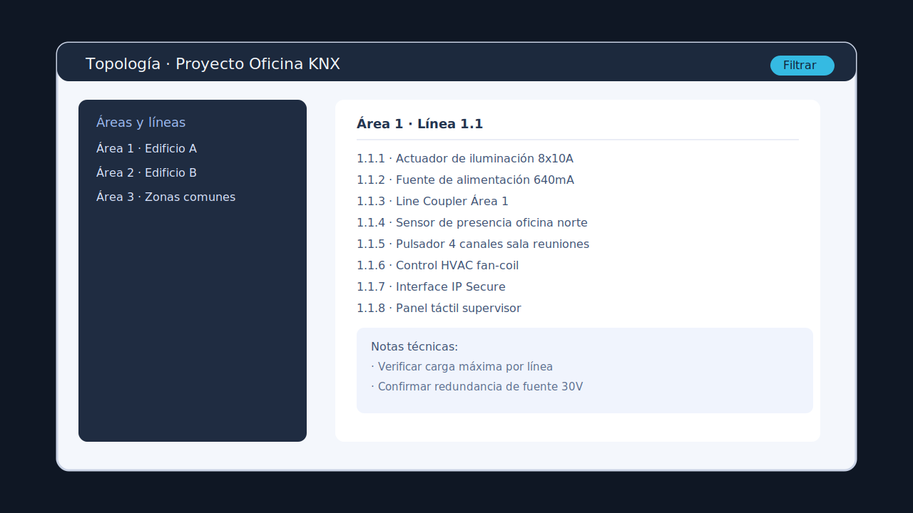

Construcción de la topología

La vista de topología de ETS5 permite validar direcciones y jerarquías antes de programar.
Añade áreas, líneas y dispositivos desde catálogos actualizados.
Asigna direcciones individuales (AAA.LL.DD) sin solapamientos.
Documenta ubicación física, tablero y circuito asociado.
Sincroniza la topología digital con la instalación en campo.
Configuración de grupos y canales
Crea grupos principales (iluminación, clima, persianas, seguridad).
Organiza subgrupos por zona y función con direcciones x/y/z.
Vincula objetos de comunicación a sus direcciones de grupo.
Utiliza colores, comentarios y filtros para ganar claridad.
Parametrización de dispositivos
Ajusta opciones de pulsadores, temporizadores, escenas y lógica.
Aplica plantillas y duplica configuraciones para ahorrar tiempo.
Verifica la compatibilidad de tipos de dato (DPT) entre objetos.
Realiza una revisión cruzada con las especificaciones del fabricante.